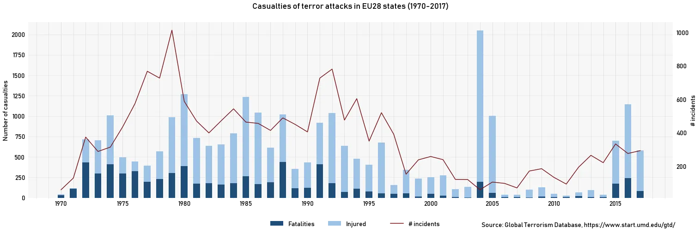
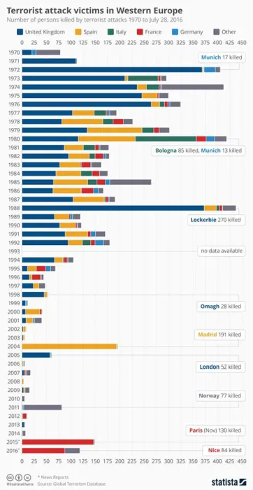
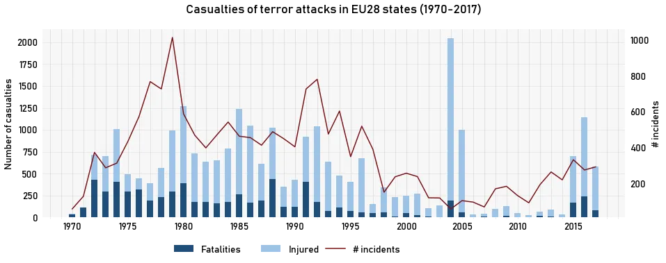
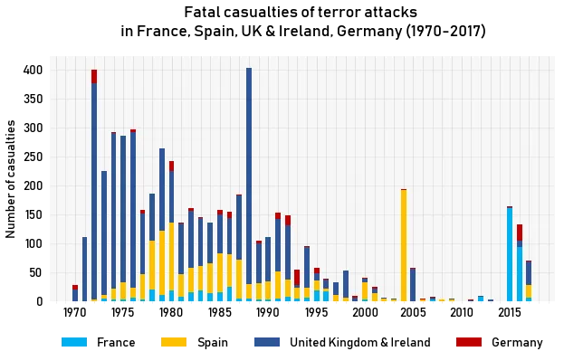
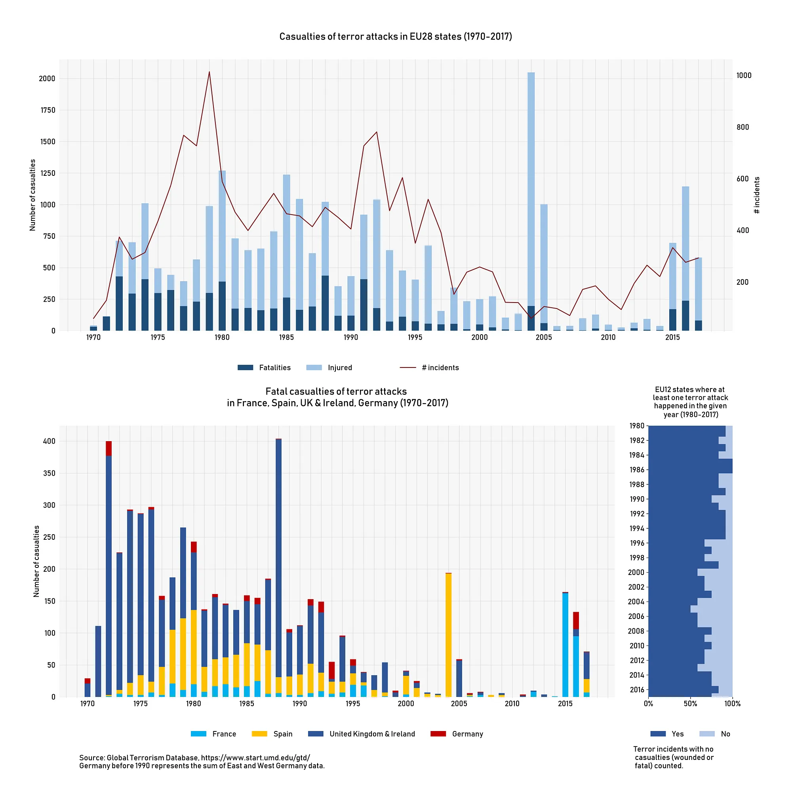

Deadliness of terror attacks in Europe
*Originally published in November 2018 on Medium *
Have the nature of terrorism changed in Europe? Were there more terrorist attacks in the decade than ever before? Do we lose more people to terrorism than we did 20 years ago? A brief visual analysis of the deadliness of terror attacks in Europe.

(Done with matplotlib, source and data is available at the end of the story.)About two years ago I got into an argument with some friends over a chart published on a Facebook page called Stand up for Europe. They’ve presented a chart from Statista showing the number of terror related deaths in certain European countries (shown below), but it didn’t show the number of attacks nor the people wounded. Our argument was about whether there are more attacks in Europe (which was an increasingly predominant viewpoint at the time) or there are the same number of attacks, but they got more deadly.

The original chart from Statista
Back then I set out to do a quick analysis on terror incidents in Europe, particularly in the biggest countries. Getting the data wasn’t particularly hard: there is a well-managed database of global terrorism events maintained by the University of Maryland. The Global Terrorism Database holds data on individual terror events often with details on known preparators, damage and even the ideology of the attacks.
I grabbed the dataset and — back in 2016 — using only Excel I’ve created a visualisation (some charts neatly arranged really) to see if our assumptions were right (the chart is available here¹). Back then I was using both the GTD and data from Wikipedia (we were really close to the 2016 Berlin attacks, no databases contained that at the time), it showed that the number of terror incidents significantly decreased with the end of the 20th century, but fatal casualties — they were on the rise.
Some time ago GTD published checked and full data for the years 2016–2017, therefore I thought it is time to revisit the question. Also as I was created the original in Excel (as a quick solution really) and as now I rather do reproducible and clearly formulated things I thought that it would be nice to recreate the updated version of the original figures with matplotlib.
After filtering the data for EU-28 and the reunification of Germany (it took two lines of code, why they had to wait all those years?) we have a neat pandas dataframe to work with. I wasn’t to greedy: looking at the number of incidents², the number of wounded and fatalities seemed enough.

Data is from the GTD, visualisation with matplotlib
There are several points to make based on this: (1) it do seems like that the number of accidents is on the rise, after plummeting in the early 2000s. Actually it looks like that we had a really peaceful decade (with the most damaging attacks — think Madrid 2004 with more than 2000 injured and about 200 dead and London with more than 700 wounded) where Europe had the time to forget the existence of a constants terrorism threat.
(2) The level of casualties — while still below — now is on terms comparable with the pre-2000 era. Which is a result of deadlier incidents.
So while the current incidence of terror attacks is higher than what we are grow accustomed to during the last decade it is certainly not unprecedented. Actually it was pretty common through the 70s, 80s and even the 90s. What have changed though is the deadliness of the attacks. For the worse.
But still, even compared to those periods something more visible has changed. Maybe it was the where. Maybe the incidents are affecting new countries in Europe or spread across the member states more than before. As most of the attacks were reported in some of the largest member states through the sample I decided to look at their numbers in details. Also in this case I only investigated deaths.

Data is from the GTD, visualisation with matplotlib
The IRA signed the Good Friday agreement in 1998. In Spain multiple ceasefires and public opposition to some of their methods caused ETA to largely cut back its operations. And then there were the RFA in Germany and the FLNC of Corsica (who in 2016 threatened islamist terrorist) — groups that also mostly vanished by the new century. “Homegrown” or separatist terrorism in Europe has largely vanished by the 2000s.
That’s why the attacks are no longer happening that concentrated — terrorism is not against a government and for sovereignty (as it was before), but against a culture, a concept. That could be the reason why — contrary to what we’ve seen in the past—in the last 20 years attacks by the same ideology were spread across countries.
While this brief analysis doesn’t try to explain why and how this process is happening I would like to give some points based on David C. Rapoport’s “The Four Waves of Modern Terrorism” which is an important read for anyone who would like to understand terrorism better.
Rapoport writes about the second, “anti-colonialist” wave, that tactics shifted from attacking prominent persons (what anarchists did) to attacking the “system”. Namely the police force, anticipating a harsh response, which in turn can help their standing with the public. They even came to the conclusion that calling themselves terrorist is not helping, that’s why they came up names like “separatists” or “liberation front”. These were the terrorists that we’ve seen in the figures in the 20th century. Deadly force were not distant from them, but their targets were mostly military or people related to the “colonists”. And — as a really important fact — they were fighting on “home-soil” and were largely dependent on local support and local public opinion.
That’s changed, and we have to jump to Rapoport’s fourth to see why. The fourth wave is the so called religious wave. According to Rapoport this wave of terrorism is largely driven by islamic groups. While this certainly seems obvious by looking at a number of attacks in Europe there were many other religion fueled groups and attacks³: jewish groups across the Middle-East, christians in America and a mix of buddhist, hindu and christian ideology in Japan.
Two points significantly differentiate them from the aforementioned groups: (1) their core audience is larger (a religion rather than an geographically limited ethnic group) and (2) geographically dispersed, yet reachable through media. And they have another kind of audience — the general public. They’re aiming for creating fear and recruiting for the cause through the fear and the resulting atrocities. In some ways it is similar to what groups of the second wave tried to achieve, but rather then provoking a harsh response from the “system” they are trying to provoke a fear fuelled response from the general public.
If we add these factors together: (1) not fighting on “home soil”, therefore not looking for a sympathetic reaction (2) importance of generating strong media attention, (3) aim to maximise the fear and thus the response of the general public, we can arrive to a theory about why the attacks got more deadly as a new kind of terrorism set foot in the 21th century Europe.

Data processing and figure creation is available in the form of a Jupyter Notebook: https://github.com/bencekd/deadliness_of_terror_attacks_eu28
1 — Back then I think I’ve made some mistakes and even possibly had some data errors, but I think I got the overall picture right.
2 — Something to be called a terrorist incident according to GTD must meet at least these criteria: (1) it must be intentional, (2) it must entail some level of violence or immediate threat of violence — either against people or property ann (3) perpetrators must be sub-national actors. Further details are available in GTD’s Codebook.
3— For the details on the examples described here see Rapoport (2002) p61.